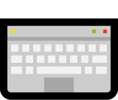
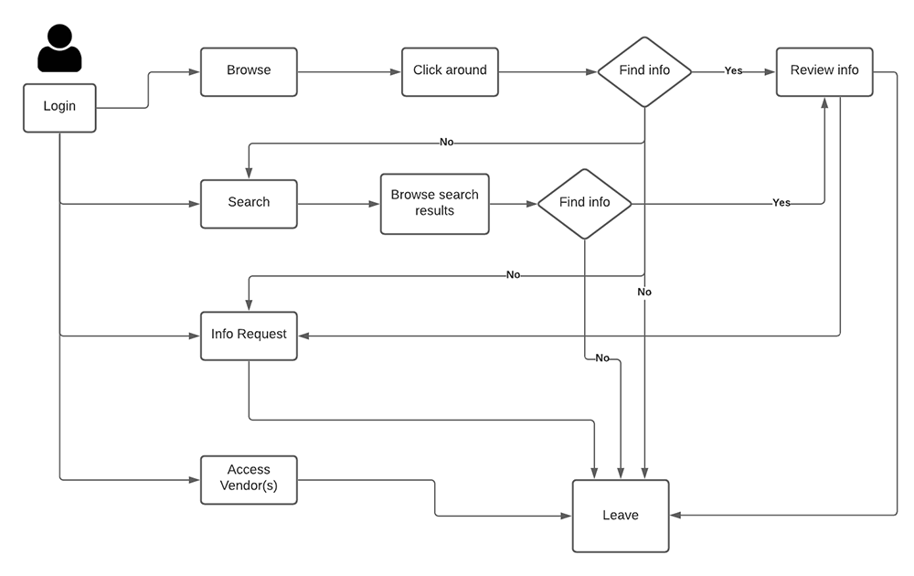
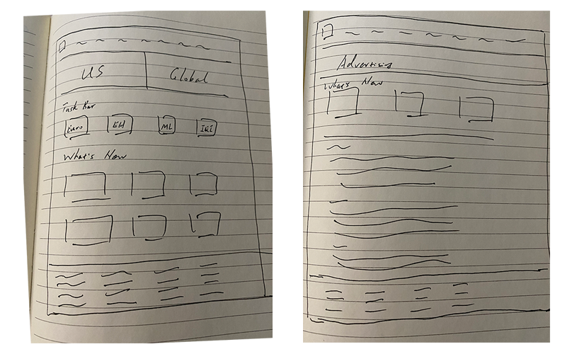
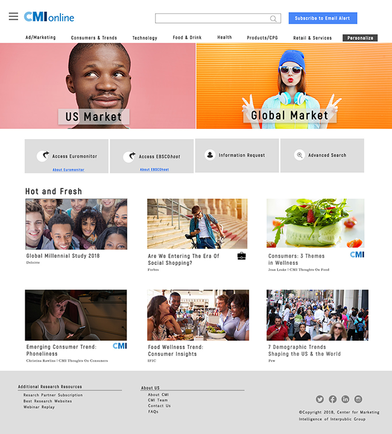
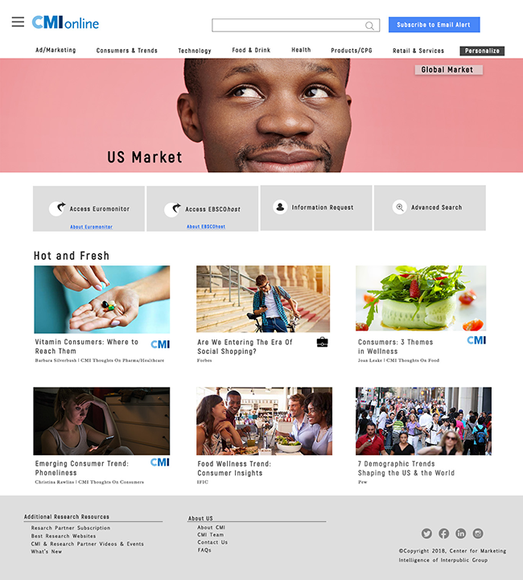
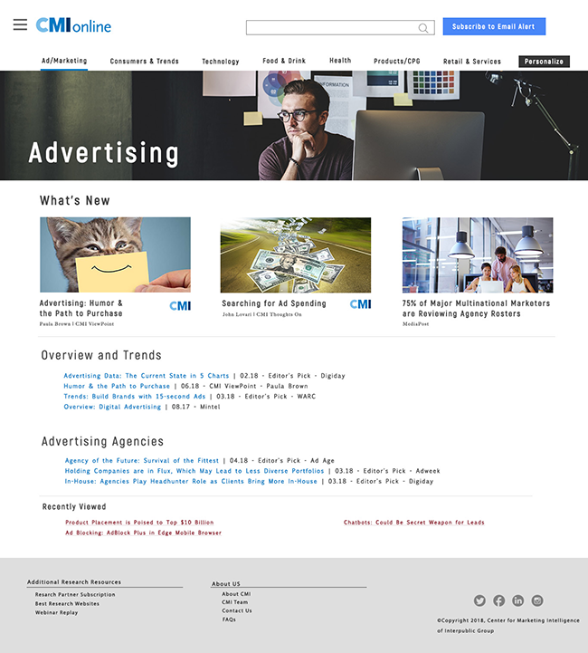
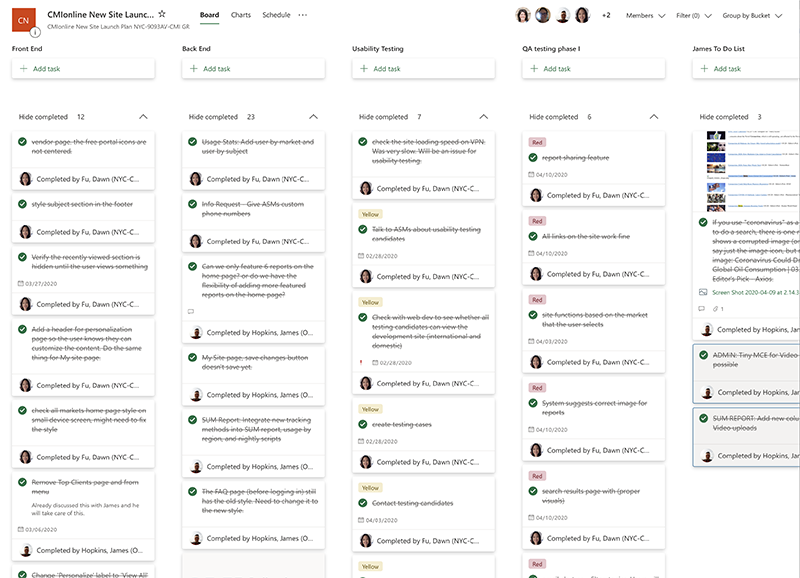

Marketing Information Website Redesign
 Duration: 3 months
Duration: 3 months
 Tools: Balsamiq, Invision, Photoshop, Cyberduck
Tools: Balsamiq, Invision, Photoshop, Cyberduck
 Languages: HTML, CSS
 My Roles: User Research, Information Architecture, Prototyping, Hi-Fi Prototype, Usability Testing, Front-end Development, Project Management
My Roles: User Research, Information Architecture, Prototyping, Hi-Fi Prototype, Usability Testing, Front-end Development, Project Management
Our website provides marketing information and insights to both US users and global users. During a survey we conducted, we received comments from the global users that the website is too U.S. centric. They can’t find the information on the global/regional market. The content curators for the site, though, completely disagree. They said they’ve posted tons of info on the global/regional market. It seems that there is a gap between the information posted and the information accessed.
“I find the coverage very US-centric, vs my role, which focuses on EMEA and key global markets (e.g. UK, France, Germany, Italy, Spain, Russia, India, China, Japan, Australia, Mexico, Brazil).”
“When using CMI, I often struggle to find research that has a focus on African countries.”
“little data from Latam”
“More Canada specific research is always appreciated!”
Another finding from the survey is about the amount of the information provided on the site. Some users commented that they find the information provided overwhelming. They have a hard time finding relevant information.
“The website is so enormous I only know a few places to go. I didn't even know I could talk to CMI people?”
“Only interested in healthcare information”
Now that we know that our users are not satisfied with their experience. The next step is to identify the gap between the real user experience and the intended experience. I conducted 30-minute sessions (via virtual meetings and phone calls) with a group of users from the US and several other countries like the UK, Brazil, and South Africa. I had them walking through a marketing research session on the site so that I can see their pain points while using the site.
By observing users using the website and by talking to users, I found that:
- Global users go directly to the dedicated global pages. They rarely browsed through other categories to look for information.
- Some users (because of the industry align of their agency) are only interested in certain topics and they will never need to access all categories.
- Some users are not aware that there is an information request form that they can fill out on the site to get human help with marketing research.
- Some users login to the site to get access to 3rd party information portals only.
I sketched a simply user journey so that it is clear to see what route that the user takes to search for the information they need. The user journey map helps me have a clear understanding of what’s the most useful features to the user and how to streamline the information architecture so that the user can access the relevant information quickly and easily.
Based on the oberservation and the user journey, I decided to make the following changes to the existing website:
- Completely revamp the infrastructure. Instead of having a section dedicated to the global market, move global reports under each category. Provide an option for the user to personalize the site to global/US/All content only. This should benefit both the agency that focuses on the US market only and the global users who don’t want to waste their time browsing through irrelevant information.
- Add the country/region in the title when posting a new report.
- Add country/region specific tags/keywords when posting a new report (for more relevant search results).
- Offer an option for the user to select only the categories that they care about. Slim down the site and only display relevant information to them.
- Add a shortcut to 3rd party information portals on the home page for quick access for users who only care about 3rd party research partners.
- Add a shortcut to the information request form on the home page to increase the awareness of human help with market research.
Next, I sketched the design for a couple of main pages and worked on the hi-fi prototypes. After completing the protoypes, I shared them on InVision with the team.




By sharing the Hi-Fi prototype on InVision, I conducted usability testing with 3 types of users:
- Usres who only logged into the site once in the last 6 months;
- Users who logged in more than 10 times but less than 50 times in the last 6 months;
- And users who logged in more than 50 times in the last 6 month.
The reason to recruit various groups of users is to see whether the new design is intuitive for light (or new) users and whether it is easy for the medium to heavy users to adapt to the new design. The finding is encouraging as the only change I need to make is to change the label for a button and a menu item.
The site is ready to be implemented at this point. I set up the static pages with HTML and coded the styles in CSS. The web deveopment group set up a testing server so that I can collaborate with the developers while implementing the website. I used Cyberduck to access the server and check in and check out files while working on the project.
Website development can be tedious as there are many tasks and many people involved, especially for a content heavy website. We cannot shut down the existing site while we implement the new site. Meanwhile, we have to make sure all the contents posted on the existing site during the implementation are incorporated into the new site. To manage all the tasks involved, I set up a tracking system in MicroSoft Planner. Our team used this system to track all the tasks at different stages. As a result, the website was launched with no delay and no bugs left to be fixed after the launch.
